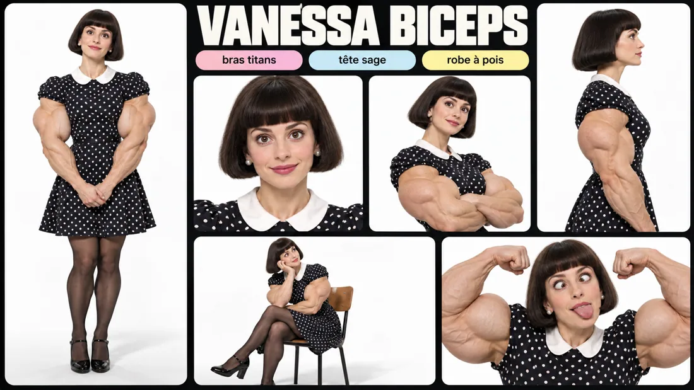

VIRAL TREND
Des personnages qu'on n'oublie pas.
Créez des personnages décalés, comiques, surprenants et mémorables pour TikTok, Reels et Shorts. Inventez un univers, puis déclinez-le en une collection cohérente.
60
scènes par profil100
images par pack
Créer un influenceur IA viral
Un personnage viral repose sur une identité visuelle lisible, des caractéristiques reconnaissables, des expressions variées et des scènes répétables. Promptya organise ces éléments en packs pour accélérer la production des contenus créatifs. Les profils fournis sont des illustrations de concepts, pas des identités humaines à copier sans autorisation.
Pourquoi produire plusieurs scènes du même personnage ?
Pour établir un univers visuel reconnaissable, tester les formats et conserver une cohérence entre publications.
Le personnage peut-il être réutilisé ?
Oui si les références et les droits sont maîtrisés, avec une méthode de génération adaptée au modèle choisi.